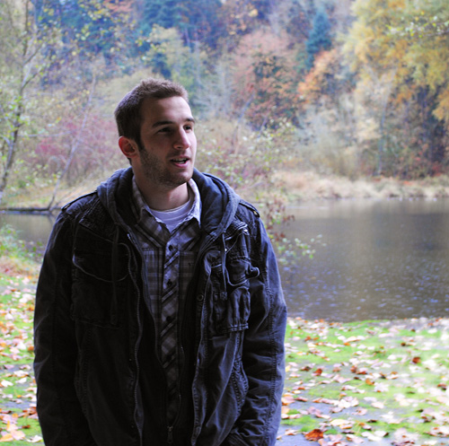

About Troy Uyan
Hi, I’m Troy Uyan, competition driven and fan of pizza. I’m a student a Clark College pursuing an AAT in Web Development. I’ve been a freelance graphic designer for a few years now, mainly working on outsourced projects from companies overseas. I also work security at the Timbers games, Rose Quarter, Amphitheater, etc.
I used to play première outdoor and semi-professional indoor soccer. I was a semi-professional gamer as well! (Seriously!) I was involved in the Counter-Strike competitive ladder and became a 4-time regional champion, playing in the Intermediate, Main, and Pro-Am levels of all the biggest national leagues, and went to LAN tournaments in various cities to compete. At the moment I am a professional simulation race driver and racing go-karts locally as well. So far I have won 14 drivers championships and 22 team championships and still looking for more!
Needless to say I am competition-driven and have no illusions about the rarity my success rate, which is why I will continue to capitalize on it until no longer possible! The dedication and skill set it takes to climb to the top of a ladder in any form of competition is intense, and I love the challenge of it. Making it to a top competitive level in three completely different sports such as soccer, eSports gaming, and auto racing I think is the best representation of my focus and talent (both mental and physical)!
Troy Uyan on Facebook
@TroyUyan on Twitter
Blutank24 on DeviantArt